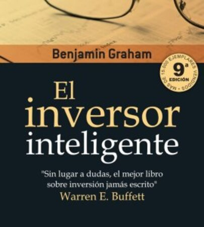

Reseña del libro El Inversor Inteligente

Escrito por Marco Araya | 10 feb 2022 | 6 min lectura
A Benjamin Graham se le conoce como The Dean of Wall Street (el decano de Wall Street) y es considerado el padre del Value Investing. A Graham se le atribuye que se empezara a hacer una distinción entre las operaciones de inversión y las de especulación. Graham perdió la mayor parte de sus inversiones en el crack de 1929, y es a partir de ahí cuando empezó a investigar sobre cómo minimizar los riesgos. ¿Cómo? Elaborando todo un pensamiento sobre adquirir acciones a un precio por debajo de su valor intrínseco conforme a un exhaustivo análisis fundamental.
Warren E. Buffett, conocido como el "Oráculo de Omaha" y uno de los más prestigiosos inversores vivos, ha dicho que El inversor inteligente de Benjamin Graham es el mejor libro sobre inversión jamás escrito. Buffett ha reconocido en un documental: “Hace mucho tiempo, Ben Graham me enseñó que precio es lo que pagas, valor es lo que obtienes. Ya sea que estemos hablando de medias o de acciones, me gusta comprar mercancía de calidad cuando está en rebajas".
A continuación compartimos estas 10 lecciones del libro El Inversor inteligente de Benjamin Graham:
1.“Mister Market es un esquizofrénico en el corto plazo que recupera su cordura en el largo plazo”.
2.“Cualquier compra de un título debe poder justificarse, tanto cualitativa como cuantitativamente”.
3.“Tener inteligencia financiera es más un rasgo del carácter que del cerebro”.
4.“Las personas que no pueden controlar sus emociones no son aptas para obtener beneficios mediante la inversión”.
5.“Usted no tendrá razón ni se equivocará por el hecho de que la multitud no esté de acuerdo con usted. Tendrá razón porque sus datos y su razonamiento sean correctos”.
6.“Las pérdidas más importantes de los inversores suelen provenir de la compra de activos de baja calidad en tiempos de bonanza económica”.
7.“El inversor inteligente sabe que las acciones cada vez son más arriesgadas a medida que su cotización aumenta y menos arriesgadas a medida que las cotizaciones descienden”.
8.“La inversión es más inteligente cuanto más se parece a una operación empresarial”.
9.“Es sorprendente ver cuántos empresarios tremendamente capaces tratan de operar en Wall Street desentendiéndose de todos los principios de sensatez con los que han conseguido el éxito en sus propias empresas”.
10.“El mercado es como un péndulo que siempre oscila entre el optimismo insostenible (que hace que los activos sean demasiado caros) y el pesimismo injustificado (que hace que los activos sean demasiado baratos). El inversor inteligente es una persona realista, que vende a optimistas y compra a pesimistas”.